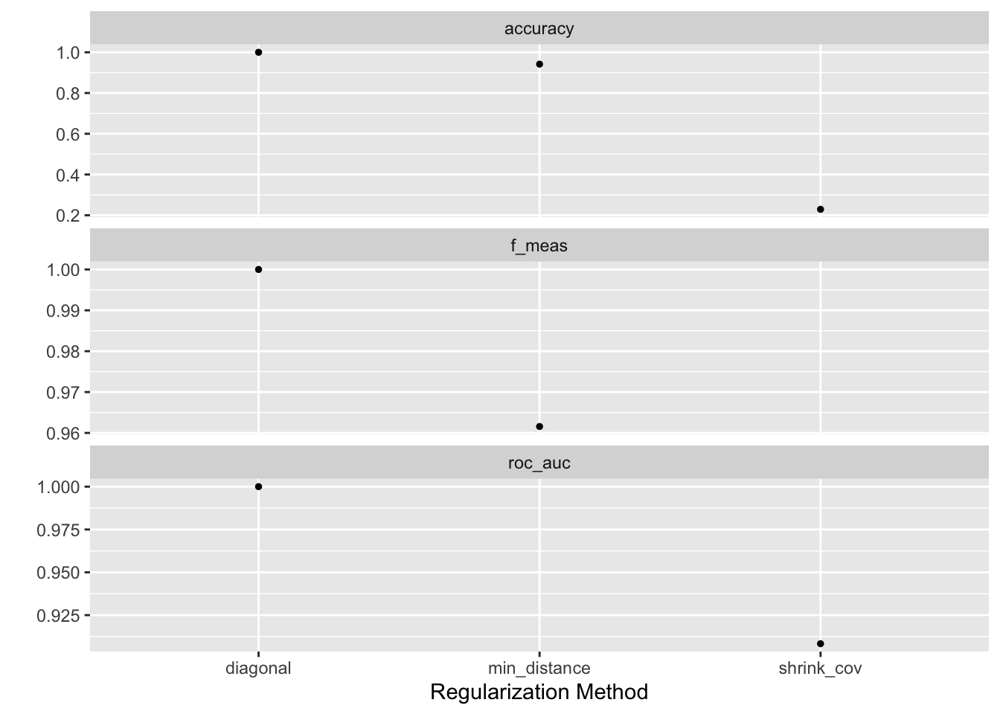
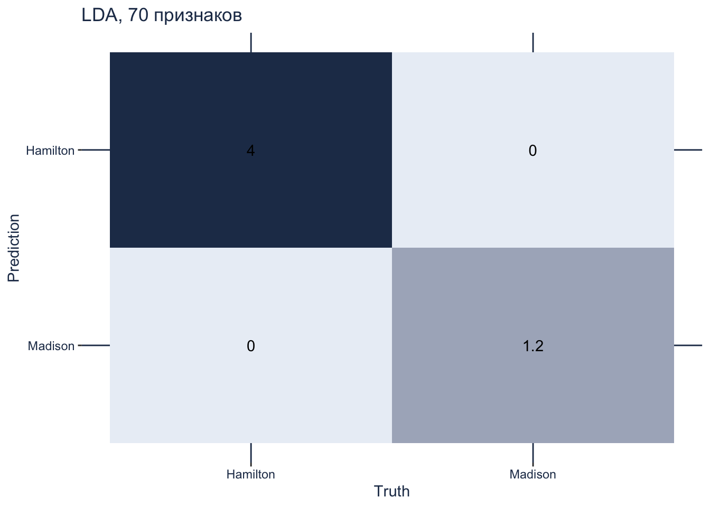
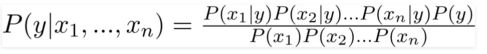
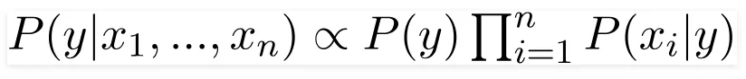
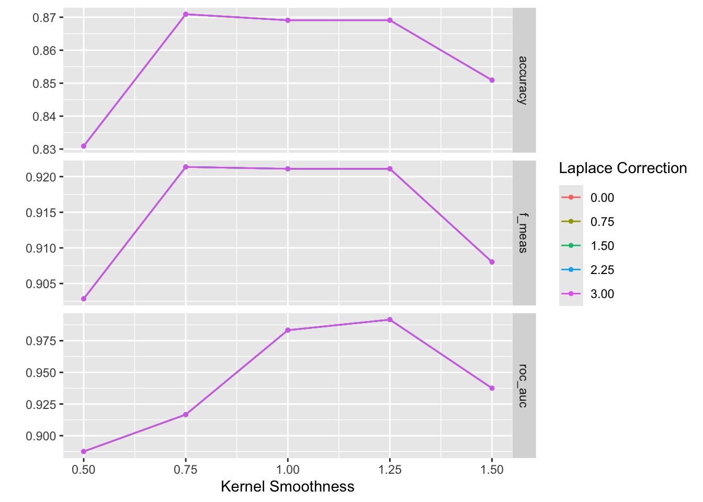
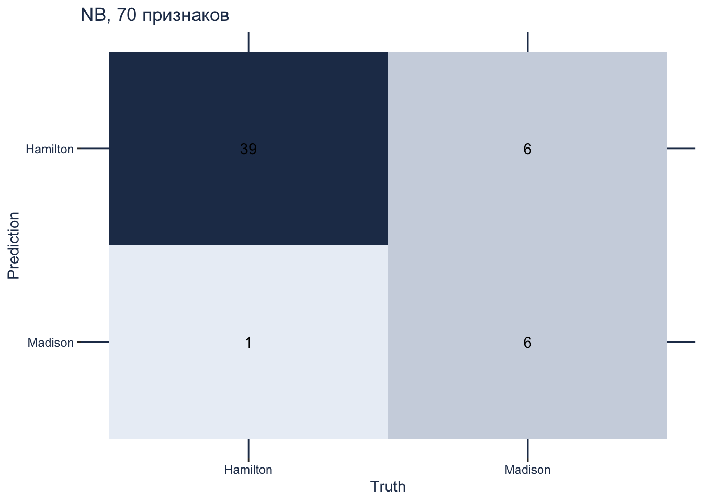
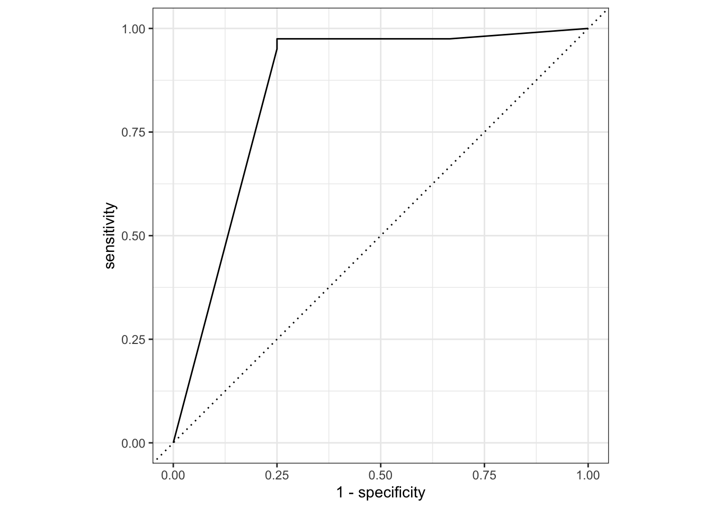
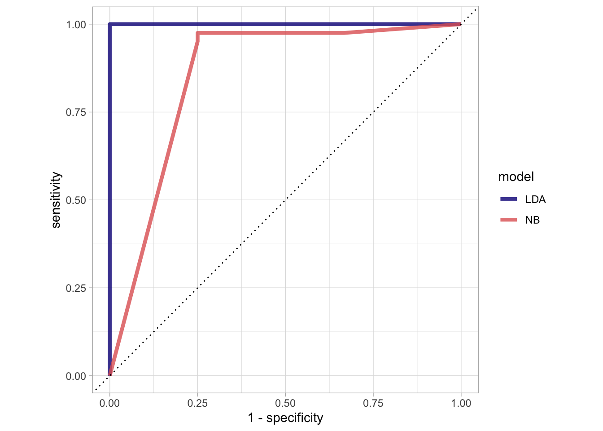

library(tidyverse)
library(tidymodels)
library(discrim)25 Бинарная классификация
В предыдущих двух уроках мы познакомились с регрессией, а в этом поговорим о классификации. В этом уроке мы рассмотрим такой метод, как линейно-дискриминантный анализ, а также научимся подбирать гиперпараметры модели.
25.1 Записки “Федералиста”
В 1963 году два американских статистика, Фредерик Мостеллер и Дэвид Уоллес, опубликовали статью «Inference in an Authorship Problem», в которой они успешно разрешили вопрос о том, кто написал 12 спорных памфлетов из «Записок федералиста» — сборника статей в поддержку утверждения Конституции США (кон. XVIII в.).
Кандидатами в авторы 12 спорных памфлетов были Джеймс Мэдисон (четвертый президент США) и Александр Гамильтон (соратник Джорджа Вашингтона, основоположник американской экономической системы). Гамильтон и Мэдисон писали в схожей ораторской манере, и в некоторых отношениях были практически стилистическими «близнецами». Однако статистикам удалось найти способ их различить.
В распоряжении статистиков были методы традиционной фишеровской статистики (дискриминантный анализ, предложенный в 1936 г.), но они впервые решили дополнить его байесовскими методами, что можно считать рождением алгоритма, известного сегодня в МО под именем Наивный Байес. Кроме того, Мостеллер и Уоллес впервые показали, что для решения вопроса об авторстве важны наиболее частотные слова, употребление которых человек почти не контролирует. Впоследствии это наблюдение легло в основу метода, предложенного Берроузом.
25.2 Подготовка данных
По ссылке скачайте датасет с частотностью слов в записках ( источник). Из него мы удалим три текста предположительного двойного авторства и пять эссе Джона Джея.
fed <- read_csv("../files/fedPapers85.csv") |>
filter(!author %in% c("HM", "Jay"))
# небольшой ремонт
colnames(fed) <- make.names(colnames(fed))Отложим спорные эссе.
dispt <- fed |>
filter(author == "dispt")
essays <- fed |>
filter(author != "dispt") |>
mutate(author = as.factor(author)) |>
dplyr::select(-filename)Разобьем оставшиеся наблюдения на обучающую и проверочную выборки.
set.seed(03022025)
data_split <- essays |>
initial_split(0.8, strata = author)
data_train <- training(data_split)
data_test <- testing(data_split)Разобьем обучающие данные группы для перекрестной проверки.
folds <- vfold_cv(data_train, strata = author, v = 5)
folds25.3 Препроцессор
# предсказываем автора по всем переменным
base_rec <- recipe(author ~ ., data = data_train) 25.4 Линейно-дискриминантный анализ
В дискриминантном анализе (например, линейном — LDA) мы хотим:
- перевести объекты из пространства признаков в новое пространство,
- в котором группы (классы) лучше всего разделены.
Это достигается путём создания новых переменных — дискриминантных функций. Каждая из них — это линейная комбинация исходных признаков, то есть новая «ось» или направление в признаковом пространстве.
Например, если у нас есть 3 признака (var₁, var₂, var₃), мы можем создать новую ось:
DF₁ = –0.5 × var₁ + 1.2 × var₂ + 0.85 × var₃
Это и есть «новая ось», вдоль которой мы будем оценивать, хорошо ли разделяются классы. Если всё правильно, точки из разных групп на этой оси будут располагаться как можно дальше друг от друга.
Теперь — как мы эту ось находим. Идея LDA: найти такую прямую (новое направление / ось), на которой проекции центров групп лежат как можно дальше друг от друга, а разброс точек внутри каждой группы остается минимальным. Это называется максимизация расстояния между центрами групп и минимизация внутриклассовой дисперсии.
С математической точки зрения, мы ищем вектор \(w\) (то есть направление новой оси), который максимизирует критерий:
J(w) = (межклассовая дисперсия) / (внутриклассовая дисперсия)
В простом случае двух классов:
J(w) = \(\frac{({μ_1}-{μ_2})^2}{σ^2_1+σ^2_2}\)
где:
- μ₁ и μ₂ — средние проекции объектов классов на вектор w,
- σ₁² и σ₂² — дисперсии проекций в каждом классе.
Наша задача — найти такой вектор w, который максимально разделяет средние значения разных классов и минимально разносит точки одного класса.

Если признаков не два, а, скажем, 100 (как бывает в задаче с текстами, генами и т. п.), то алгоритм строит до K–1 дискриминантных функций (ось), где K — число классов. Например:
- Для 2 классов → 1 ось (DF₁),
- Для 3 классов → 2 оси (DF₁ и DF₂),
- И т. д.
В итоге мы можем визуализировать данные в новом пространстве.

На заметку
Важно: чем это отличается от PCA (главных компонент)?
- PCA — выбирает оси с максимальной общей дисперсией, но не учитывает классы.
- LDA — выбирает оси, которые максимально разделяют известные классы (использует метки классов).
Таким образом, LDA работает как «обученный» метод (supervised), в отличие от PCA.
25.4.1 Спецификация модели
Мы будем использовать регуляризованный LDA. Он применяется в тех случаях, когда число признаков превышает число наблюдений, а также при сильной мультиколлинеарности (зависимости признаков друг от друга). Регуляризация “штрафует” избыточно высокие коэффициенты, что делает модель более устойчивой и предотвращает переобучение.
# выбираем модель
lda_spec <- discrim_linear(regularization_method = tune()) |>
set_mode("classification") |>
set_engine("sparsediscrim")
lda_specLinear Discriminant Model Specification (classification)
Main Arguments:
regularization_method = tune()
Computational engine: sparsediscrim 25.4.2 Выбор гиперпараметров
Метод регуляризации мы подберем при помощи настройки.
lda_param_set <- extract_parameter_set_dials(lda_spec)
lda_param_setСоздадим сетку гиперпараметров.
lda_grid <- lda_param_set |>
grid_regular()
lda_grid |>
gt::gt()| regularization_method |
|---|
| diagonal |
| min_distance |
| shrink_cov |
Теперь добавим модель и препроцессор в воркфлоу.
# workflow
lda_wflow <- workflow() |>
add_model(lda_spec) |>
add_recipe(base_rec)
lda_wflow══ Workflow ════════════════════════════════════════════════════════════════════
Preprocessor: Recipe
Model: discrim_linear()
── Preprocessor ────────────────────────────────────────────────────────────────
0 Recipe Steps
── Model ───────────────────────────────────────────────────────────────────────
Linear Discriminant Model Specification (classification)
Main Arguments:
regularization_method = tune()
Computational engine: sparsediscrim lda_tune <- lda_wflow |>
tune_grid(
resamples = folds,
grid = lda_grid,
metrics = metric_set(accuracy, f_meas, roc_auc),
control = control_resamples(save_pred = TRUE)
)25.4.3 Оценка модели: F-score
В этом примере мы использовали два критерия оценки: точность (т.е доля верных ответов) и F-score, также известный как F1-score или гармоническое среднее. Это комплексная метрика, которая объединяет в себе два других важных показателя эффективности модели: точность (precision) и полноту (recall).

Precision (точность) - это доля правильно классифицированных положительных примеров среди всех примеров, предсказанных как положительные. Recall (полнота, она же sensitivity) - это доля правильно классифицированных положительных примеров среди всех фактически положительных примеров.
Формула для расчета F-score:
\[F\text{-}score = 2 \cdot \frac{precision \cdot recall}{precision + recall}\]
Где:
- \(precision = \frac{TP}{TP + FP}\)
- \(recall = \frac{TP}{TP + FN}\)
F-score находится в диапазоне от 0 до 1, и чем ближе значение к 1, тем лучше работает модель. При оценке качества поисковой системы F-score может быть более информативным, чем только точность или только полнота, поскольку учитывает оба этих аспекта. Гармоническое среднее работает как «штраф»: если хотя бы один из показателей близок к нулю, вся F-мера резко стремится к нулю.
tune::collect_metrics(lda_tune) |>
gt::gt()| regularization_method | .metric | .estimator | mean | n | std_err | .config |
|---|---|---|---|---|---|---|
| diagonal | accuracy | binary | 1.0000000 | 5 | 0.00000000 | Preprocessor1_Model1 |
| diagonal | f_meas | binary | 1.0000000 | 5 | 0.00000000 | Preprocessor1_Model1 |
| diagonal | roc_auc | binary | 1.0000000 | 5 | 0.00000000 | Preprocessor1_Model1 |
| min_distance | accuracy | binary | 0.9418182 | 5 | 0.02381055 | Preprocessor1_Model2 |
| min_distance | f_meas | binary | 0.9615686 | 5 | 0.01575475 | Preprocessor1_Model2 |
| min_distance | roc_auc | binary | NaN | 0 | NA | Preprocessor1_Model2 |
| shrink_cov | accuracy | binary | 0.2290909 | 5 | 0.01781447 | Preprocessor1_Model3 |
| shrink_cov | f_meas | binary | NaN | 0 | NA | Preprocessor1_Model3 |
| shrink_cov | roc_auc | binary | 0.9083333 | 5 | 0.09166667 | Preprocessor1_Model3 |
autoplot(lda_tune) 
lda_best <- tune::select_best(lda_tune, metric = "accuracy")
lda_best |>
gt::gt()| regularization_method | .config |
|---|---|
| diagonal | Preprocessor1_Model1 |
Таким образом, оптимальным методом является диагональная регуляризация. Вот как это работает.
Чтобы найти тот самый вектор \(w\) (то есть вектор коэффициентов), о котором мы говорили выше, алгоритму нужно рассчитать, как признаки взаимосвязаны между собой. Все эти связи записываются в таблицу — ковариационную матрицу. Однако если признаков слишком много (например, сотни слов), а текстов мало, эта матрица становится «пустой» или вырожденной. С точки зрения математики она превращается в тупик: её невозможно “развернуть” (инвертировать), а без этого LDA не может вычислить коэффициенты.Для решения этой проблемы применяется диагональная регуляризация: мы берем ковариационную матрицу и добавляем к её диагональным элементам (связь признака с самим собой) небольшую константу \(λ\). Это “оживляет” матрицу, делает её невырожденной и обратимой. В результате мы можем провести все необходимые вычисления и получить устойчивую модель даже на “плохих” данных.
25.4.4 ROC-кривая
ROC-кривая (англ. receiver operating characteristic, рабочая характеристика приёмника) — это график, который показывает как меняются следующие характеристики бинарного классификатора при варьировании порога отсечения.
Ось Y (TPR) показывает долю правильно классифицированных положительных примеров (чувствительность, sensitivity = true positive rate = recall). Изменяется от 0 до 1.
По оси X откладывается доля отрицательных объектов, ошибочно классифицированных как положительные (false positive rate, FPR); это значение равно 1 − специфичность. FPR - это доля “ложных тревог” среди всех реальных отрицательных примеров. Специфичность - это доля правильно классифицированных негативных примеров.
\[Specificity = \frac{TN}{TN+FP}\] \[FPR = \frac{FP}{FP+TN} = 1 - Specificity \]
Диагональная линия (y=x) представляет случайный классификатор. Она показывает, что доля правильных предсказаний для “плюсов” (TPR) не выше доли ошибок для “минусов” (FPR). Иными словами, вдоль диагонали TPR и FPR всегда равны. Это значит, что модель находит 20% реальных “плюсов” ценой 20% “ложных тревог” среди “минусов”.
Площадь под ROC-кривой (Area Under Curve, AUC) - показывает качество классификатора. Чем больше AUC (максимальное значение 1), тем лучше работает модель.
Основные интерпретации ROC-кривой:
- Если кривая расположена выше диагональной линии, это говорит о том, что модель работает лучше случайной классификации.
- Если кривая совпадает с диагональной линией, то модель не способна отличить положительные и отрицательные классы.
- Если кривая расположена ниже диагональной линии, это свидетельствует о том, что модель работает хуже случайной классификации.
lda_predictions <- lda_tune |>
collect_predictions(parameters = lda_best) lda_predictions |>
roc_curve(author, .pred_Hamilton) |>
# или, для другого класса:
#roc_curve(author, .pred_Madison, event_level = "second") |>
autoplot()
25.4.5 Матрица смешения
Взглянем на матрицу смешения. В обучающих данных всего 52 текста, из них 40 принадлежит Гамильтону, а 12 – Мэдисону.
lda_tune |>
collect_predictions(parameters = lda_best) |>
conf_mat(author, .pred_class) |>
autoplot(type = "heatmap") +
scale_fill_gradient(low = "#eaeff6", high = "#233857") +
theme(panel.grid.major = element_line(colour = "#233857"),
axis.text = element_text(color = "#233857"),
axis.title = element_text(color = "#233857"),
plot.title = element_text(color = "#233857")) +
ggtitle("LDA, 70 признаков")25.4.6 Окончательная настройка модели
Прежде всего установим нужный метод регуляризации.
final_lda_wflow <-
lda_wflow |>
finalize_workflow(lda_best)
final_lda_wflow══ Workflow ════════════════════════════════════════════════════════════════════
Preprocessor: Recipe
Model: discrim_linear()
── Preprocessor ────────────────────────────────────────────────────────────────
0 Recipe Steps
── Model ───────────────────────────────────────────────────────────────────────
Linear Discriminant Model Specification (classification)
Main Arguments:
regularization_method = diagonal
Computational engine: sparsediscrim И подгоним модель.
lda_fit <- final_lda_wflow |>
fit(data_train)25.4.7 Отложенная выборка
У нас остались неиспользованными 14 наблюдений в тестовой выборке.
pred_test <- predict(lda_fit, data_test, type = "class")Здесь тоже 100%-я точность.
test_acc <- tibble(predicted = pred_test$.pred_class,
expected = data_test$author,
value = predicted == expected)
sum(test_acc$value) / nrow(test_acc)[1] 125.4.8 Классификация спорных эссе
Все указывает на то, что в большинстве случаев Мэдисон – наиболее вероятный автор. Что касается 55-го эссе, то на его счет сомневались и Мостеллер с Уоллесом.
predict(lda_fit, dispt, type = "class") |>
mutate(essay = dispt$filename) |>
gt::gt()| .pred_class | essay |
|---|---|
| Madison | dispt_fed_49.txt |
| Madison | dispt_fed_50.txt |
| Madison | dispt_fed_51.txt |
| Madison | dispt_fed_52.txt |
| Madison | dispt_fed_53.txt |
| Madison | dispt_fed_54.txt |
| Hamilton | dispt_fed_55.txt |
| Madison | dispt_fed_56.txt |
| Madison | dispt_fed_57.txt |
| Madison | dispt_fed_62.txt |
| Madison | dispt_fed_63.txt |
25.5 Наивный Байес
Еще один алгоритм, который часто используется в задачах классификации, называется “наивный Байес”.
25.5.1 Теорема Байеса
Теорема Байеса позволяет оценить вероятность одного события на основе вероятности другого события. Математически теорема Байеса выглядит так:
\[P(A|B) = \frac{P(B|A) \times P(A)}{P(B)}\]
Здесь:
\(P(A|B)\) - вероятность события A при условии, что произошло событие B (апостериорная вероятность); она рассчитывается с учетом того, как часто события А и В происходят вместе и того, как часто вообще происходит B. Например: какова вероятность того, что письмо, содержащее слово “наследство”, является спамом?
\(P(B|A)\) - вероятность события B при условии, что произошло событие A (правдоподобие). Например: какова вероятность встретить слово “наследство” в спаме?
\(P(A)\) - вероятность события A (априорная вероятность). Например: какова вероятность получить спам?
\(P(B)\) - вероятность события B (маргинальное правдоподобие). Например: как часто вообще встречается слово “наследство”?
Теорема Байеса широко применяется в задачах классификации в машинном обучении. Например, в наивном байесовском классификаторе, который использует теорему Байеса для вычисления вероятности принадлежности объекта к тому или иному классу.
Чтобы лучше понять теорему, решите несколько задач.
Дано:
\(P(L)=0.7\) (вероятность выбора латте).
\(P(C)=0.3\) (вероятность выбора капучино).
\(P(S|L)=0.2\) (вероятность добавления сахара для латте).
\(P(S∣C)=0.4P\) (вероятность добавления сахара для капучино).
Необходимо найти \(P(L∣S)\) — вероятность того, что клиент выбрал латте при условии, что он добавил сахар. Полная вероятность добавления сахара считается так: \(P(S) = P(S∣L)⋅P(L)+ P(S∣C)⋅P(C)\).
Ответ:
Дано:
\(P(M)=0.7\) (вероятность выбрать мейн-куна).
\(P(B)=0.3\) (вероятность выбрать британского короткошерстного).
\(P(G∣M)=0.15\) (вероятность зеленых глаз для мейн-куна).
\(P(G∣B)=0.4\) (вероятность зеленых глаз для британского короткошерстного).
Необходимо найти: \(P(M∣G)\) — вероятность того, что кот — мейн-кун при условии, что у него зеленые глаза.
Ответ: .
Ответ: .
Можете придумать свою задачу?
25.5.2 Применение теоремы в МО
Наивный байесовский классификатор называется “наивным” из-за ключевого допущения, которое он делает в своей работе: предположение о независимости признаков.
Наивный Байес предполагает, что признаки (предикторы) объекта, который нужно классифицировать, являются статистически независимыми друг от друга, то есть значение одного признака не зависит от значений других признаков.
Это “наивное” предположение значительно упрощает вычисления, необходимые для применения теоремы Байеса. Вместо того, чтобы вычислять сложную совместную вероятность всех признаков, наивный Байес разбивает это на произведение вероятностей отдельных признаков.

Знаменатель будет для всех групп одинаков, поэтому:

Хотя это предположение редко выполняется в реальных данных, наивный Байес часто демонстрирует неожиданно хорошую производительность. Таким образом, “наивность” этого классификатора относится именно к этому упрощающему предположению.
Что если в обучающем корпусе слово в каком-то классе не встречается? Чтобы все вероятности не обнулились, применяют критерий Лапласа, то есть добавляют ко всем значениям в таблице небольшое число.
25.5.3 Спецификация модели
Предварительно установите пакет {discrim}.
# выбираем модель
nb_spec <- naive_Bayes(Laplace = tune(),
smoothness = tune()) |>
set_mode("classification") |>
set_engine("naivebayes")
nb_specNaive Bayes Model Specification (classification)
Main Arguments:
smoothness = tune()
Laplace = tune()
Computational engine: naivebayes Согласно документации, меньшие значения smoothness приводят к более гибким, адаптивным границам между классами. Другими словами, smoothness - это параметр, с помощью которого можно контролировать гибкость границ классификации, определяемых наивным байесовским классификатором. Низкие значения smoothness позволяют модели более точно подстраиваться под обучающие данные, но могут также приводить к переобучению. Высокие значения сглаживают границы и делают модель более устойчивой, но менее точной на обучающих данных.
25.5.4 Выбор гиперпараметров
nb_param <- extract_parameter_set_dials(nb_spec)
nb_paramТеперь добавим модель и препроцессор в воркфлоу.
# workflow
nb_wflow <- workflow() |>
add_model(nb_spec) |>
add_recipe(base_rec)
nb_wflow══ Workflow ════════════════════════════════════════════════════════════════════
Preprocessor: Recipe
Model: naive_Bayes()
── Preprocessor ────────────────────────────────────────────────────────────────
0 Recipe Steps
── Model ───────────────────────────────────────────────────────────────────────
Naive Bayes Model Specification (classification)
Main Arguments:
smoothness = tune()
Laplace = tune()
Computational engine: naivebayes nb_tune <- nb_wflow |>
tune_grid(
resamples = folds,
grid = nb_param |> grid_regular(levels = 5),
metrics = metric_set(accuracy, f_meas, roc_auc),
control = control_resamples(save_pred = TRUE)
)
nb_tune collect_metrics(nb_tune)autoplot(nb_tune)
show_best(nb_tune, n = 1, metric = "roc_auc")nb_best <- select_best(nb_tune, metric = "roc_auc")
nb_best25.5.5 Матрица смешения
Напомним, что в обучающих данных всего 52 текста, из них 40 принадлежит Гамильтону, а 12 – Мэдисону.
nb_tune |>
collect_predictions(parameters = nb_best) |>
conf_mat(author, .pred_class) |>
autoplot(type = "heatmap") +
scale_fill_gradient(low = "#eaeff6", high = "#233857") +
theme(panel.grid.major = element_line(colour = "#233857"),
axis.text = element_text(color = "#233857"),
axis.title = element_text(color = "#233857"),
plot.title = element_text(color = "#233857")) +
ggtitle("NB, 70 признаков")
25.5.6 ROC-кривая
nb_predictions <- nb_tune |>
collect_predictions(parameters = nb_best) |>
mutate_if(is.numeric, round, 3)
nb_predictionsnb_predictions |>
roc_curve(author, .pred_Hamilton) |>
autoplot() 
Результат чуть хуже, чем дает LDA, так что применять этот алгоритм к спорным текстам мы не будем.
Для сравнения различных методов бывает полезно вывести на одном графике несколько моделей.
lda_predictions |>
roc_curve(author, .pred_Hamilton) |>
mutate(model = "LDA") |>
bind_rows(nb_predictions |>
roc_curve(author, .pred_Hamilton) |>
mutate(model = "NB")) |>
ggplot(aes(x = 1 - specificity, y = sensitivity, col = model)) +
geom_path(lwd = 1.5, alpha = 0.8) +
geom_abline(lty = 3) +
coord_equal() +
scale_color_viridis_d(option = "plasma", end = .6) +
theme_light()
25.6 Видео
- Видео 2025 г.
- Видео 2026 г.
25.7 Лабораторная работа.
К этому уроку полагается лабораторная работа. Задание выдаст преподаватель на занятии.